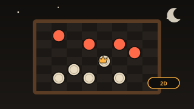
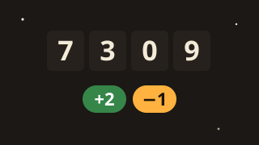
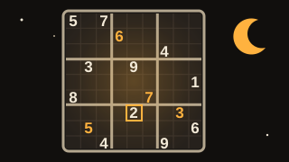

Günün Kelimesi
Nasıl oynanır?
Gizli kelime beş harfli bir Türkçe sözcüktür ve bulmak için altı hakkın var. Her tahminden sonra harflerin rengi değişir: yeşil harf kelimede ve doğru yerde, sarı harf kelimede var ama başka yerde, gri harf ise kelimede yok demektir. Kelime her gece yarısı değişir ve o gün herkes aynı kelimeyi çözer. Günlük kelimeyi bitirdikten sonra serbest modda istediğin kadar rastgele kelimeyle oynayabilirsin. İstatistiklerin yalnızca bu cihazda saklanır, hesap gerekmez.
Benzer oyunlar
-

Masa oyunuDama
Türk damasını bilgisayara karşı oyna: zorunlu yeme, çok taşlı yeme zinciri, dama taşı, üç seviye ve her gün herkese aynı "2 hamlede kazan" bulmacası.
-

BulmacaSayı Bulmaca
Rakamları farklı gizli sayıyı +/− ipuçlarıyla mantık yürüterek bul. Günlük bulmaca, 3-5 hane zorluk ve rakam eleme paneli.
-

BulmacaSudoku
Kalem notlu, 4 seviyeli Sudoku: Türkçe adım adım ipucu, her gün herkese aynı günlük bulmaca ve seri. Her bulmaca tek çözümlü.